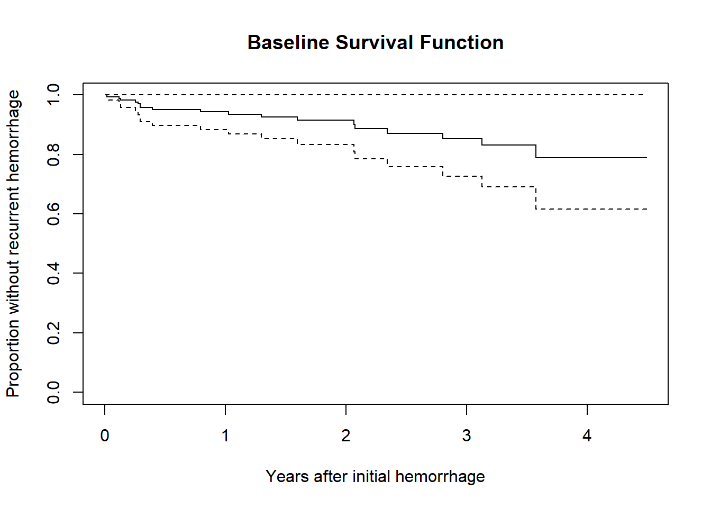

knitr::opts_chunk$set(comment = NA)
library(broom)
library(survival)
library(rms)
library(tidyverse)
theme_set(theme_bw())30 Cox Regression Models, Part 1
30.1 R Setup Used Here
30.1.1 Data Load
hem <- read_csv("data/hem.csv", show_col_types = FALSE) The Cox proportional hazards (Cox regression) model fits survival data with a constant (i.e. not varying over time) covariate \(x\) to a hazard function of the form:
\[ h(t | x) = h_0(t) exp[\beta_1 x] \]
where we will estimate the unknown value of \(\beta_1\) and where \(h_0(t)\) is the baseline hazard, which is a non-parametric and unspecified value which depends on \(t\) but not on \(x\).
- For particular \(x\) values, we will be able to estimate the survival function if we have an estimate of the baseline survival function, \(\hat{S_0}(t)\).
The estimated survival function for an individual with covariate value \(x_k\) turns out to be
\[ \hat{S}(t | x_k) = [\hat{S_0}(t)]^{exp(\beta_1 x_k)} \]
From Wikipedia (yes, really) …
Survival models can be viewed as consisting of two parts: the underlying hazard function, describing how the risk of event per time unit changes over time at baseline levels of covariates; and the effect parameters, describing how the hazard varies in response to explanatory covariates.
The key assumption in a Cox model is that the hazards are proportional - other types of survival models need not have this restriction. Quoting the always reliable (well, it’s better than you think) Wikipedia …
In a proportional hazards model, the unique effect of a unit increase in a covariate is multiplicative with respect to the hazard rate. For example, taking a drug may halve one’s hazard rate for a stroke occurring, or, changing the material from which a manufactured component is constructed may double its hazard rate for failure.
There are two main approaches to fitting Cox models in R.
- the
coxphfunction in thesurvivalpackage, and - the
cphfunction in thermspackage.
30.2 Sources used in building this material
- David Diez’s excellent supplement for the OpenIntro Statistics project, on Survival Analysis in R.
- Some tools in R to do some fancier work can be viewed at https://cran.r-project.org/web/views/Survival.html
- You might also look at these two blog posts, originally from the Just Another Data blog.
- https://rpubs.com/daspringate/survival has some great slides, and I’ve stolen from them quite a bit here.
30.3 Fitting a Cox Model in R with coxph
As a first example, I’ll fit a model to predict time to recurrence in the hem data, on the basis of a single predictor: genotype.
cfit <- with(hem, coxph(Surv(time, recur) ~ genotype))
cfitCall:
coxph(formula = Surv(time, recur) ~ genotype)
coef exp(coef) se(coef) z p
genotype 1.3317 3.7874 0.5699 2.337 0.0195
Likelihood ratio test=6.61 on 1 df, p=0.01015
n= 70, number of events= 18 This summary provides an overall comparison of the two genotypes, using a proportional hazards model.
- The default approach in R is to use the “efron” method of breaking ties: other options include “breslow” and “exact”.
30.3.1 Summarizing the Fit
summary(cfit)Call:
coxph(formula = Surv(time, recur) ~ genotype)
n= 70, number of events= 18
coef exp(coef) se(coef) z Pr(>|z|)
genotype 1.3317 3.7874 0.5699 2.337 0.0195 *
---
Signif. codes: 0 '***' 0.001 '**' 0.01 '*' 0.05 '.' 0.1 ' ' 1
exp(coef) exp(-coef) lower .95 upper .95
genotype 3.787 0.264 1.239 11.57
Concordance= 0.622 (se = 0.061 )
Likelihood ratio test= 6.61 on 1 df, p=0.01
Wald test = 5.46 on 1 df, p=0.02
Score (logrank) test = 6.28 on 1 df, p=0.01This provides estimates of the \(\beta\) value for genotype, including standard errors and \(p\) values for a Wald test. Also included is an estimate of the hazard ratio and its confidence interval.
- Here we have a hazard ratio estimate of
exp(coef) = 3.787, with 95% CI (1.24, 11.57). - The hazard ratio is the multiplicative effect of the covariate (here, having at least one of the \(\epsilon 2\) or \(\epsilon 4\) allele) on the hazard function for recurrent hemorrhage
- A hazard ratio of 1 indicates no effect
- A hazard ratio > 1 indicates an increase in the hazard as the covariate rises
- A hazard ratio < 1 indicates a decrease in the hazard as the covariate rises
We can also tidy the hazard ratio estimate with the broom package.
tidy(cfit, exponentiate = TRUE)# A tibble: 1 × 5
term estimate std.error statistic p.value
<chr> <dbl> <dbl> <dbl> <dbl>
1 genotype 3.79 0.570 2.34 0.0195In addition, we have several other summaries:
- The concordance measure is only appropriate when we have at least one continuous predictor in our Cox model.
- The Cox & Snell pseudo-\(R^2\) reflects the improvement of the model we’ve fit over the model with an intercept alone, but isn’t a proportion of anything (hence the listing of the maximum possible value).
- The Likelihood ratio, Wald and Score (logrank) tests provide insight into the overall significance of the model.
We can obtain a more detailed description of the likelihood-ratio test of the model with anova.
anova(cfit)Analysis of Deviance Table
Cox model: response is Surv(time, recur)
Terms added sequentially (first to last)
loglik Chisq Df Pr(>|Chi|)
NULL -66.675
genotype -63.371 6.6078 1 0.01015 *
---
Signif. codes: 0 '***' 0.001 '**' 0.01 '*' 0.05 '.' 0.1 ' ' 130.3.2 Glancing at the model?
glance(cfit)# A tibble: 1 × 18
n nevent statist…¹ p.val…² stati…³ p.val…⁴ stati…⁵ p.val…⁶ stati…⁷ p.val…⁸
<int> <dbl> <dbl> <dbl> <dbl> <dbl> <dbl> <dbl> <dbl> <dbl>
1 70 18 6.61 0.0102 6.28 0.0122 5.46 0.0195 NA NA
# … with 8 more variables: r.squared <dbl>, r.squared.max <dbl>,
# concordance <dbl>, std.error.concordance <dbl>, logLik <dbl>, AIC <dbl>,
# BIC <dbl>, nobs <int>, and abbreviated variable names ¹statistic.log,
# ²p.value.log, ³statistic.sc, ⁴p.value.sc, ⁵statistic.wald, ⁶p.value.wald,
# ⁷statistic.robust, ⁸p.value.robustHere, we obtain several additional summaries of the model, including most of the important information from a summary of cfit.
30.3.3 Plot the baseline survival function
Here, we’ll plot the time in terms of months, but scaled to 12 month (one year) groups.
plot(survfit(cfit), xscale = 12,
xlab = "Years after initial hemorrhage",
ylab = "Proportion without recurrent hemorrhage",
main = "Baseline Survival Function")
30.3.4 Plot the genotype effect
There are several ways to build these plots. One approach follows. Another uses a cph fit and the survplot function from the rms package.
newdat <- with(hem,
data.frame(
genotype = c(1, 0)
)
)
newdat genotype
1 1
2 0plot(survfit(cfit, newdata = newdat), xscale = 12,
conf.int = TRUE,
col = c("red", "blue"),
xlab = "Years after initial hemorrhage",
ylab = "Proportion without recurrent hemorrhage",
main = "Plotting the genotype effects from the cfit Model")
legend(0.5, 0.2,
legend=c(
expression(paste("Homozygous ", epsilon, "3 / ",
epsilon, "3")),
expression(paste("At least one ", epsilon,"2 or ",
epsilon,"4 Allele"))
),
lty = 1,
col = c("red", "blue"),
text.col = c("red", "blue"))30.3.5 Testing the Key Assumption: Proportional Hazards
The cox.zph function in the survival package will test the proportionality of all of the predictors included in your model by creating interactions with time.
- A small \(p\) value would indicate a violation of the proportionality assumption.
cox.zph(cfit, transform="km", global=TRUE) chisq df p
genotype 2.09 1 0.15
GLOBAL 2.09 1 0.15Since the p value here is not significant, we may be all right. But it’s sensible to focus further on plots derived from the model fit, rather than relying solely on this test.
30.3.6 Plotting the cox.zph results for the cfit model
cox.zph function can be used to generate a plot for each of the individual predictors in the model. Of course, in this case, we have just one predictor: genotype. If the proportional hazards assumption is appropriate, then we should see a slope of essentially zero in each such plot. A slope that is seriously different from zero suggests a violation of the proportional hazards assumption.
plot(cox.zph(cfit, transform="km", global=TRUE))The plot suggests only a slight rise in the plotted values over time, suggesting no serious problem with the proportional hazards assumption. This combined testing and plotting approach is a reasonable starting place for assessing the proportional hazards assumption, but it’s likely insufficient for good practical work.
Should the proportional hazards assumption fit less well, we have two main options: (1) fit a non-linear term in the covariate in question, and (2) fit a different type of regression model that doesn’t require the proportional hazards assumption.
30.4 Fitting a Cox Model using cph from the rms package
To set up a cph fit for our comparison of genotypes in the hem data, we’ll follow these steps.
units(hem$time) <- "month"
d <- datadist(hem)
options(datadist = "d")
hemsurv <- Surv(time = hem$time, event = hem$recur)
model_hem <- cph(hemsurv ~ genotype, data = hem,
x = TRUE, y = TRUE, surv = TRUE)Note that the surv = TRUE piece is required to get some of the follow-up analyses to work smoothly.
30.4.1 The Main cph results
model_hemCox Proportional Hazards Model
cph(formula = hemsurv ~ genotype, data = hem, x = TRUE, y = TRUE,
surv = TRUE)
Model Tests Discrimination
Indexes
Obs 70 LR chi2 6.61 R2 0.106
Events 18 d.f. 1 R2(1,70) 0.077
Center 0.7229 Pr(> chi2) 0.0102 R2(1,18) 0.268
Score chi2 6.28 Dxy 0.244
Pr(> chi2) 0.0122
Coef S.E. Wald Z Pr(>|Z|)
genotype 1.3317 0.5699 2.34 0.0195 Included here are likelihood ratio and score tests for the model as a whole (as compared to the intercept-only model), as well as the usual discrimination indexes.
- These include both an \(R^2\) analog due to Nagelkerke (which can go all the way up to 1), and
- Somers’ \(Dxy\), which can also produce an estimate of the C statistic (area under the curve) via the formula C = 0.5 + Dxy / 2, so here C = 0.5 + (.244/2) = 0.622
- For lots more on survival analysis C statistics, look at the
survAUCpackage in R.
These results are followed by a table of Wald tests for each of the coefficients in the model.
30.4.2 Using anova with cph
As in other rms fits, we can use anova to obtain more detailed (in terms of combining nonlinear terms and, if available, interactions) tests.
anova(model_hem) Wald Statistics Response: hemsurv
Factor Chi-Square d.f. P
genotype 5.46 1 0.0195
TOTAL 5.46 1 0.019530.4.3 Effect Sizes after cph fit
We can use summary on a cph object to get and plot effect size estimates (here, these are hazard ratios.)
summary(model_hem) Effects Response : hemsurv
Factor Low High Diff. Effect S.E. Lower 0.95 Upper 0.95
genotype 0 1 1 1.3317 0.5699 0.21468 2.4486
Hazard Ratio 0 1 1 3.7873 NA 1.23950 11.5730 plot(summary(model_hem))30.4.4 Validating cph summaries
For details on these last few indices (D, U, Q, etc.), visit ?validate.cph in R.
set.seed(43201); validate(model_hem) index.orig training test optimism index.corrected n
Dxy 0.2441 0.2508 0.2197 0.0311 0.2130 40
R2 0.1058 0.1203 0.1058 0.0144 0.0914 40
Slope 1.0000 1.0000 -6.4747 7.4747 -6.4747 40
D 0.0421 0.0532 0.0421 0.0111 0.0310 40
U -0.0150 -0.0168 0.0198 -0.0366 0.0216 40
Q 0.0571 0.0699 0.0222 0.0477 0.0094 40
g 0.6705 0.7908 0.6705 0.1203 0.5502 4030.4.5 Plotting Survival Functions for each Genotype
Here is the survplot approach I mentioned earlier.
survplot(model_hem, genotype,
lty = c(1,2), n.risk=TRUE, time.inc=12,
col=c("magenta", "dodgerblue"),
xlab="Hemorrhage-Free Survival in Months")We can add, for instance, confidence interval bars, with:
survplot(model_hem, genotype,
lwd=3, lty = c(1,2), conf.int=.95,
n.risk=TRUE, time.inc = 12, conf='bars',
col=c("magenta", "dodgerblue"),
xlab="Hemorrhage-Free Survival Time in Months")For more details, check out R’s help file on survplot.
30.4.6 Genotype’s effect on log relative hazard
ggplot(Predict(model_hem, genotype))30.4.7 Nomogram of our simple hem model
We can estimate 1-year and 3-year hemorrhage-free survival probabilities, for example, with this model, and incorporate these results into our nomogram.
survx <- Survival(model_hem)
plot(nomogram(model_hem, fun=list(function(x) survx(12, x),
function(x) survx(36, x)),
funlabel=c("12-month Pr(Survival)",
"36-month Pr(Survival)")))Again, this is just a very simple model, with one binary predictor.
30.4.8 Assessing the Proportional Hazards Assumption
cox.zph(model_hem, transform="km") chisq df p
genotype 2.09 1 0.15
GLOBAL 2.09 1 0.15- Consider using
transform="rank"to transform the survival times by their ranks prior to performing the test. - Or use
transform="identity"as we’ll do in the plot below.
30.4.9 Plot to Check PH Assumption
plot(cox.zph(model_hem, "identity"))